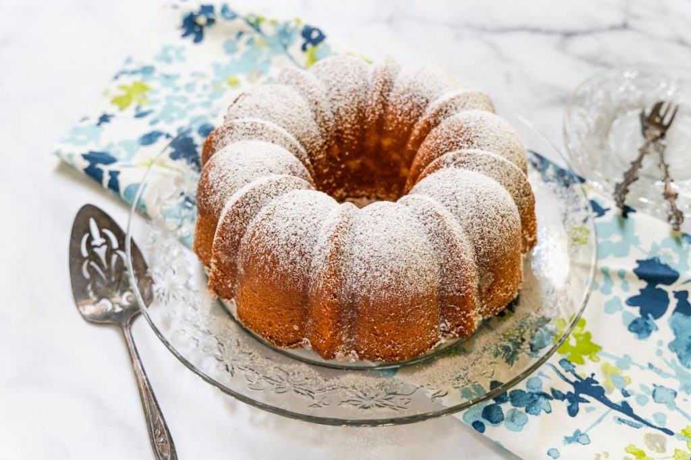

-

Kentucky Butter Cake
Ingredients
- Flour - 3 cups
- White Sugar - 2 cups
- Salt - 1 teaspoon
- Baking Powder - 1 teaspoon
- Baking Soda - 1/2 teaspoon
- Buttermilk - 1 cup
- Butter - 1 cup
- Vanilla - 2 teaspoon
- Eggs - 4
- White Sugar - 3/4 cup
- Butter - 1/2 cup
- Water - 3 tablespoons
- Vanilla - 2 teaspoons
Method of Preparation
Preheat oven to 325°F. Mix flour, salt, sugar, baking powder and baking soda. Add buttermilk, butter, vanilla and eggs and beat for 3 minutes.
Grease and flour a bundt pan or any baking pan. Pour in mixture. Bake for 1 hour. Take out and punch holes round the cake.
In a saucepan, mix sugar, butter vanilla and water and mix thoroughly. Pour on the cake and allow to rest till cool. Serve!.